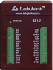
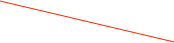

LabJack



The LabJack USB DAQ unit has eight single ended ADC inputs (or four differential inputs), twenty digital I/O inputs that can be configured as input or output, a counter, and two DAQ outputs. The manual can be found online at: http://labjack.com/support/u12/users-guide. There is a driver in the ORCA drivers repository that must be installed before this object will be functional.If your device is seen properly by the system, its serial number should show up in this list. Select the one for the device you’re controlling.
The current value of the counter
Channel names can be edited. Just double-click
Output values will not be set unless this is checked
The direction of the I/O bit. Checked means it is an input bit
The values of the input bits. Blank if the bit is an output.
The values of the output bits. Blank if the bit is an input.
The ADC values. You can edit the units and specify that a channel is single ended or differential.
The digital I/O bits on the top of the LabJack box. These have current limiting resistors.
The DAQ outputs

When displayed in an ORCA process these process limits are used for alarm limits.
The gains have meaning only if an adc channel is differential.
When displayed in an ORCA process, the min and max values of the displayed meter need to be known.
The displayed ADC values can be scaled to represent physically meaningful numbers like Temperature or Voltage. Assume that the normal range of 0-4095 adc units represent -10V to +10V.